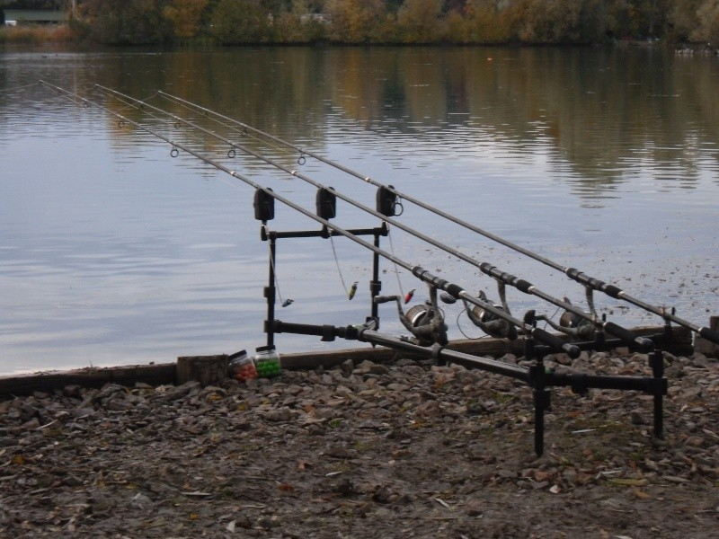
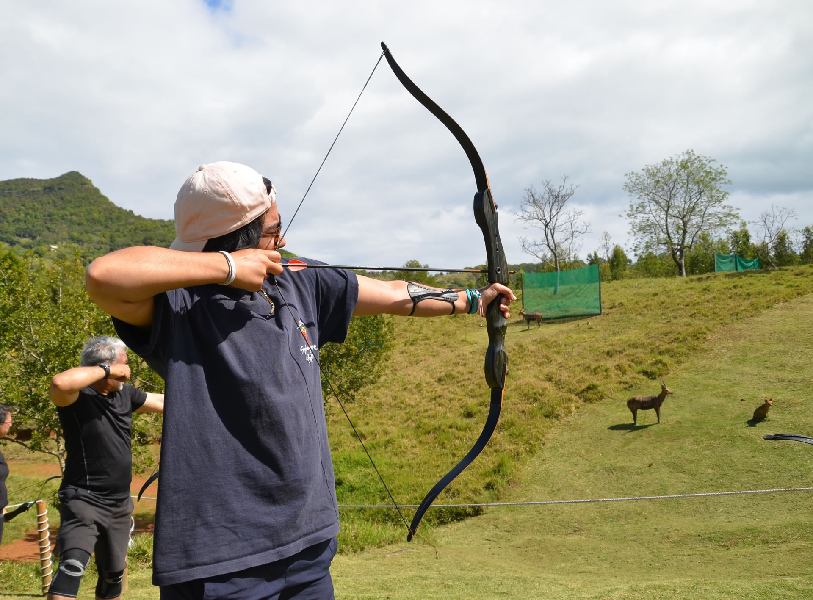
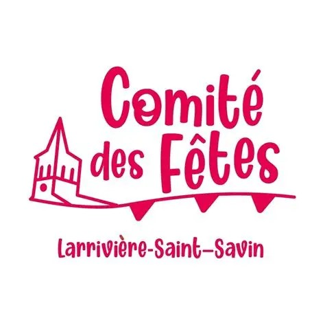
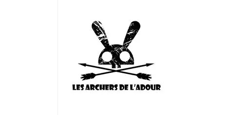

Qui suis-je
À propos
Je suis actuellement étudiant en première année de BUT Génie Électrique et Informatique Industrielle (GEII) à l'IUT de Bordeaux. Je m'oriente vers les métiers liés à l'électronique et aux systèmes automatisés, avec un intérêt particulier pour la conception de cartes électroniques et la programmation industrielle. Issu d'un baccalauréat général avec les spécialités mathématiques et NSI, j'ai acquis des bases solides dans les matières théoriques tout en restant efficace lors des phases de manipulation. J'apprécie particulièrement le travail en équipe dans les Situations d'Apprentissage et d'Évaluation (SAÉ), qui me permettent de mettre en pratique mes compétences avec dynamisme et engagement.
Parcours scolaire
Ma trajectoire
Obtention du brevet avec mention Très Bien. Réalisation d'un stage d'observation chez Informatique 40, permettant une première immersion dans le domaine informatique et technologique.
Choix des spécialités mathématiques, NSI et physique. Orientation progressive vers les métiers de l'électronique, avec acquisition de bases en programmation et en logique.
Poursuite des spécialités mathématiques et NSI, consolidation des compétences en informatique et en analyse. Obtention du baccalauréat mention Bien.
Formation en Génie Électrique et Informatique Industrielle, avec une approche concrète mêlant électronique et programmation industrielle. Réalisation de projets pratiques et travail en équipe en SAÉ. Objectif : intégrer le parcours Électronique et Systèmes Embarqués.
Personnalité & loisirs
Centres d'intérêt
Développe endurance, persévérance et capacité à rester concentré sur la durée.

Développe patience, observation et précision.

Développe concentration, rigueur et maîtrise de soi.
Développe adaptation, analyse et résolution de problèmes.
Développe discipline, régularité et persévérance.

Participation à l'organisation d'événements, développement du travail en équipe et du sens des responsabilités.

Implication dans la gestion du club, développement de la communication, de l'engagement et de la prise d'initiative.